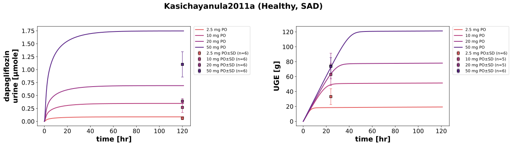
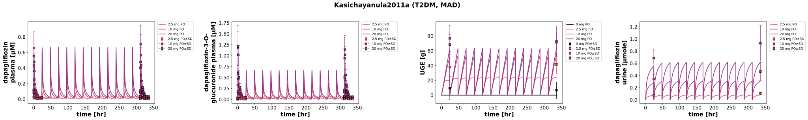
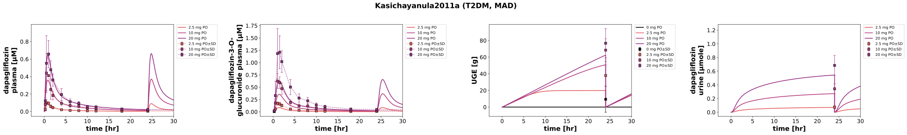
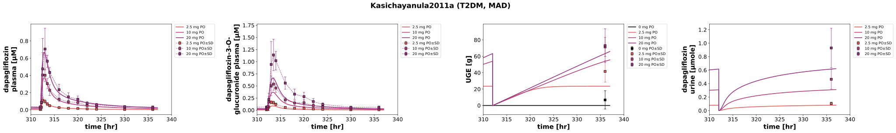

Overview
Models
| model | source |
|---|---|
| model | dapagliflozin_body_flat.xml |
Datasets
Figures (4)








Code
"""Simulation experiment of the study Kasichayanula2011a."""
from typing import ClassVar, override
import pandas as pd
from pkpdsim.metadata import (
ApplicationForm,
Dosing,
Fasting,
Health,
PKPDMappingMetaData,
Route,
Tissue,
)
from sbmlsim import Q
from sbmlsim.data import DataSet
from sbmlsim.fit import FitData, FitMapping
from sbmlsim.plot import Axis, Figure
from sbmlsim.simulation import Change, Simulation
from sbmlsim.units import Quantity
from pkdb_models.models.dapagliflozin import MODEL
from pkdb_models.models.dapagliflozin.experiments.base_experiment import (
DapagliflozinSimulationExperiment,
)
class Kasichayanula2011a(DapagliflozinSimulationExperiment):
"""Simulation experiment of Kasichayanula2011a.
SAD (MB102010): 32 healthy Japanese men, single capsules of 2.5, 10, 20 and
50 mg (6 active, 2 placebo per group) after a fast of 10 hr; urine 0-120 hr.
The plasma is reported only as PK parameters; urinary dapagliflozin
(Tab2A) is simulated. The urinary glucose of the SAD contradicts itself:
the text gives 7.45, 24.4, 28.5 and 32.2 g over 24 hr, the individual
values of Fig4A have the means 33, 63, 74 and 74 g; Fig4A is shown, not
fitted.
MAD (MB102025): 36 Japanese patients with type 2 diabetes on metformin or
diet, 2.5, 10 and 20 mg tablets (9 active, 3 placebo per group) once daily
for 14 days, standard meals on the sampling days (the timing of the dose to
the meals and the fasting glucose are not reported); plasma and urine 0-24
hr on days 1 and 14. Metformin does not change the exposure
(Kasichayanula2011c) and is not simulated. The urine is collected per day:
urinary glucose and dapagliflozin are set to 0 at every dose, the data at
24 hr are compared with the state before the reset.
The creatinine clearance (Cockcroft-Gault) is the renal function X/101.
"""
doses_sad: ClassVar[list[float]] = [2.5, 10, 20, 50]
doses_mad: ClassVar[list[float]] = [0, 2.5, 10, 20]
# body weights of the SAD placebo group: 64.3 kg
bodyweights: ClassVar[dict[str, float]] = {
"SAD2.5": 64.7,
"SAD10": 60.0,
"SAD20": 64.8,
"SAD50": 67.4,
"MAD0": 61.0,
"MAD2.5": 60.8,
"MAD10": 60.2,
"MAD20": 67.4,
} # [kg]
# creatinine clearance (Cockcroft-Gault) [ml/min], SAD placebo 135.6
creatinine_clearances: ClassVar[dict[str, float]] = {
"SAD2.5": 151.6,
"SAD10": 150.2,
"SAD20": 147.7,
"SAD50": 154.3,
"MAD0": 103,
"MAD2.5": 112,
"MAD10": 103,
"MAD20": 103,
}
info: ClassVar[dict[str, str]] = {
"[Cve_dap]": "dapagliflozin",
"[Cve_d3g]": "dapagliflozin 3-o-glucuronide",
"KI__UGE": "uge",
"Aurine_dap": "dapagliflozin_urine",
}
def renal_function(self, group: str) -> Quantity:
"""Get the renal function of a group from its creatinine clearance.
Args:
group: the group, a key of `creatinine_clearances`.
Returns:
The renal function relative to the healthy GFR.
"""
return Q(self.creatinine_clearances[group] / self.gfr_healthy, "dimensionless")
@staticmethod
def _measured(df: pd.DataFrame) -> pd.DataFrame:
"""Drop the zero amounts at the start of a urine collection.
The curation has 0 g (0 mg) at the start of the collections of day 1
and day 14 (0 and 312 hr), which are not measurements; at 312 hr the
model has the amount of day 13 before the reset.
"""
return df[~(df["time"].isin([0.0, 312.0]) & (df["mean"] == 0))]
@override
def datasets(self) -> dict[str, DataSet]:
dsets = {}
# Fig2: dap & d3g (MAD); Fig3: UGE (MAD); Tab2A: urinary dap (SAD, MAD)
for fig_id in ["Fig2", "Fig3", "Tab2A"]:
df = self.load_dataframe(fig_id)
if fig_id == "Tab2A":
# the recovery in percent is the same as the amount in mg
df = df[df["measurement_type"] == "cumulative amount"]
if fig_id in {"Fig3", "Tab2A"}:
df = self._measured(df)
for label, df_label in df.groupby("label"):
label = str(label)
dset = DataSet.from_df(df_label, self.ureg)
# unit conversion to mole/l
if label.startswith("dapagliflozin_"):
dset.unit_conversion("mean", 1 / self.Mr.dap)
elif label.startswith("dapagliflozin 3-o-glucuronide"):
dset.unit_conversion("mean", 1 / self.Mr.d3g)
dsets[self.to_sid(label)] = dset
# Fig4A: the urinary glucose 0-24 hr of the SAD subjects, as group means
df = self.load_dataframe("Fig4")
df = df[df["time"] == 24]
for dose in self.doses_sad:
values = df[df["individual"].astype(str).str.startswith(f"SAD{dose}_")][
"value"
]
dsets[self.to_sid(f"uge_SAD{dose}")] = DataSet.from_df(
pd.DataFrame(
{
"time": [24.0],
"time_unit": ["hr"],
"mean": [values.mean()],
"sd": [values.std()],
"count": [len(values)],
"unit": ["g"],
}
),
self.ureg,
)
return dsets
@override
def simulations(self) -> dict[str, Simulation]:
simulations = {}
# single dose, healthy
for dose in self.doses_sad:
group = f"SAD{dose}"
simulations[self.to_sid(f"po_{group}")] = Simulation(
time_unit="hr",
end=121,
preinit_changes={
**self.default_changes(),
# physiological changes
"BW": Q(self.bodyweights[group], "kg"),
"[KI__fpg]": Q(self.fpg_healthy, "mM"),
"GU__fed": Q(self.fasting_map["fasted"], "dimensionless"),
"f_cirrhosis": Q(self.cirrhosis_map["Control"], "dimensionless"),
"KI__f_renal_function": self.renal_function(group),
# dose (IVDOSE, PODOSE)
"PODOSE_dap": Q(dose, "mg"),
},
)
# multiple dose, T2DM
for dose in self.doses_mad:
group = f"MAD{dose}"
simulations[self.to_sid(f"po_{group}")] = Simulation(
time_unit="hr",
end=13 * 24 + 25,
preinit_changes={
**self.default_changes(),
# physiological changes
"BW": Q(self.bodyweights[group], "kg"),
"[KI__fpg]": Q(self.fpg_t2dm, "mM"),
"GU__fed": Q(self.fasting_map["not reported"], "dimensionless"),
"f_cirrhosis": Q(self.cirrhosis_map["Control"], "dimensionless"),
"KI__f_renal_function": self.renal_function(group),
# dose (IVDOSE, PODOSE)
"PODOSE_dap": Q(dose, "mg"),
},
changes=[
Change(
[24 * k for k in range(1, 14)],
{
"KI__glc_urine": Q(0, "mmole"), # reset UGE
"Aurine_dap": Q(0, "mmole"), # reset urinary dap
},
),
self.add_doses(
[24 * k for k in range(1, 14)], {"PODOSE_dap": Q(dose, "mg")}
),
],
)
return simulations
@override
def fit_mappings(self) -> dict[str, FitMapping]:
mappings = {}
# multiple dose, T2DM
for dose in self.doses_mad:
for sid, name in self.info.items():
if name.startswith("dapagliflozin") and dose == 0:
continue
mappings[self.to_sid(f"fm_dap{dose}_{name}")] = FitMapping(
self,
reference=FitData(
self,
dataset=self.to_sid(f"{name}_MAD{dose}"),
xid="time",
yid="mean",
yid_sd="mean_sd",
count="count",
),
observable=FitData(
self,
task=self.to_sid(f"task_po_MAD{dose}"),
xid="time",
yid=sid,
),
metadata=PKPDMappingMetaData(
tissue=Tissue.PLASMA if sid.startswith("[") else Tissue.URINE,
route=Route.PO,
application_form=ApplicationForm.TABLET,
dosing=Dosing.MULTIPLE,
health=Health.T2DM,
fasting=Fasting.NR,
),
)
# single dose, healthy: urinary dapagliflozin 0-120 hr
for dose in self.doses_sad:
mappings[self.to_sid(f"fm_sad{dose}_dapagliflozin_urine")] = FitMapping(
self,
reference=FitData(
self,
dataset=self.to_sid(f"dapagliflozin_urine_SAD{dose}"),
xid="time",
yid="mean",
yid_sd="mean_sd",
count="count",
),
observable=FitData(
self,
task=self.to_sid(f"task_po_SAD{dose}"),
xid="time",
yid="Aurine_dap",
),
metadata=PKPDMappingMetaData(
tissue=Tissue.URINE,
route=Route.PO,
application_form=ApplicationForm.CAPSULE,
dosing=Dosing.SINGLE,
health=Health.HEALTHY,
fasting=Fasting.FASTED,
),
)
return mappings
@override
def figures(self) -> dict[str, Figure]:
return {
**self.figure_sad(),
**self.figure_mad(),
}
def figure_sad(self) -> dict[str, Figure]:
"""Single ascending doses: urinary dapagliflozin and glucose."""
fig = Figure(
experiment=self,
sid="Fig4_SAD",
num_rows=1,
num_cols=2,
name=f"{self.__class__.__name__} (Healthy, SAD)",
)
# the legends inside the panels cover data
fig.settings = {**fig.settings, "legend_position": "outside"}
plots = fig.create_plots(
xaxis=Axis(self.label_time, unit=self.unit_time), legend=True
)
plots[0].set_yaxis(self.label_dap_urine, unit=self.unit_dap_urine)
plots[1].set_yaxis(self.label_uge, unit=self.unit_uge)
for dose in self.doses_sad:
dose_label = f"{dose} mg PO"
for kp, (sid, dataset) in enumerate(
[("Aurine_dap", "dapagliflozin_urine"), ("KI__UGE", "uge")]
):
plots[kp].add_data(
task=self.to_sid(f"task_po_SAD{dose}"),
xid="time",
yid=sid,
label=dose_label,
color=self.dose_colors[dose],
)
plots[kp].add_data(
dataset=self.to_sid(f"{dataset}_SAD{dose}"),
xid="time",
yid="mean",
yid_sd="mean_sd",
count="count",
label=dose_label,
color=self.dose_colors[dose],
linestyle="",
)
return self.figures_by_sid(fig)
def figure_mad(self) -> dict[str, Figure]:
"""Multiple ascending doses: the whole time course, the start and the end."""
figures = []
subplots = ["all", "start", "end"]
for subplot in subplots:
fig = Figure(
experiment=self,
sid=self.to_sid(f"Fig1_{subplot}"),
num_rows=1,
num_cols=4,
name=f"{self.__class__.__name__} (T2DM, MAD)",
)
# the legends inside the panels cover data
fig.settings = {**fig.settings, "legend_position": "outside"}
plots = fig.create_plots(
xaxis=Axis(self.label_time, unit=self.unit_time), legend=True
)
plots[0].set_yaxis(self.label_dap_plasma, unit=self.unit_dap)
plots[1].set_yaxis(self.label_d3g_plasma, unit=self.unit_d3g)
plots[2].set_yaxis(self.label_uge, unit=self.unit_uge)
plots[3].set_yaxis(self.label_dap_urine, unit=self.unit_dap_urine)
for kp in range(4):
if subplot == "start":
plots[kp].set_xaxis(
self.label_time, unit=self.unit_time, min=-3, max=30
)
elif subplot == "end":
plots[kp].set_xaxis(
self.label_time, unit=self.unit_time, min=310, max=340
)
for dose in self.doses_mad:
for kp, (sid, name) in enumerate(self.info.items()):
if name.startswith("dapagliflozin") and dose == 0:
continue
dose_label = f"{dose} mg PO"
# simulation
plots[kp].add_data(
task=self.to_sid(f"task_po_MAD{dose}"),
xid="time",
yid=sid,
label=dose_label,
color=self.dose_colors[dose],
)
# data
plots[kp].add_data(
dataset=self.to_sid(f"{name}_MAD{dose}"),
xid="time",
yid="mean",
yid_sd="mean_sd",
label=dose_label,
color=self.dose_colors[dose],
linestyle="--" if sid.startswith("[") else "",
)
figures.append(fig)
return self.figures_by_sid(*figures)
if __name__ == "__main__":
MODEL.run_experiments(Kasichayanula2011a, output_dir=Kasichayanula2011a.__name__)